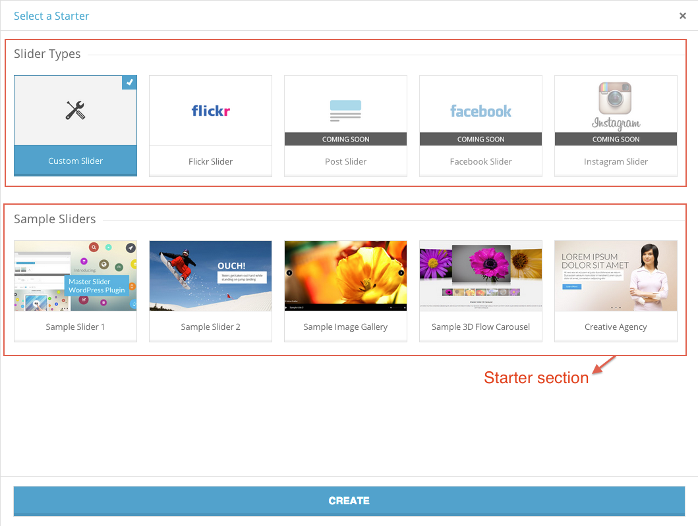

Thank you
At first we would like to say thank you for choosing Master Slider WordPress plugin.
This documentation is for
This documentation is made explicitly for developers to show what is going on inside of plugin. If you are NOT a programmer, please read the End-Users Documentation, you don't need to follow any of the instructions here.
If you are developer, you definitely enjoy working with Master Slider because it's written in Object oriented PHP with best practices based on WordPress coding standards.
Attention: The following manual may use programming terms without offering detailed explanations for non-programmers.
What you can expect from this documentation
In this documentation you will find out the things you need to know about incorporating Master Slider WP in a project like WordPress theme. You will find guidelines to bundle the plugin inside project, and it explains several ways to modify/extend the features and capabilities of the plugin.
Licensing terms
- You need to purchase an extended license for each theme that includes Master Slider then change it to in-stock license.
- You cannot redistribute the item "as-is", even if you modify it or you make a derivative version for another platform.
- Please study the full license information. Extended license and Licensing FAQs.
Usage terms
Since the current licenses do not deal with re-selling Items, Envato lets authors to decide whether they grant permission for bundling Items or not.
We have the following conditions:
You are permitted to use “Master Slider” in a larger stock item under the following conditions:
You cannot offer the plugin as a stand-alone item
You can't include the plugin separately from your theme in the download package, you have to use the TGM Plugin Activation class. See the Bundling section for more information.
You cannot provide an Item Purchase Code for your customers
Since Envato doesn't have a "multi-use" or transferable license, your customers are not entitled to receive an Item Purchase Code with your theme and use the plugin separately from your work.
Updating the plugin is your own responsibility
Since your customers can't receive updates from us, you need to handle this on your own. The TGM Plugin Activation class makes it simple, and we are providing the necessary tools to make it quick as well.
You need to handle Master Slider related support requests for your customers
We would like to hear your thoughts and suggestions to fix issues and improve our items based on your feedback, but we cannot provide free support for your customers, this is your own responsibility.
Use our preferred settings for TGM plugin installation
With the above mentioned licensing terms you need to configure the plugin in TGM to automatically activate & deactivate it whenever your users are switching themes.
You need to credit Master slider in your item’s profile page.
Introduction
As of 9th September 2013, Envato requires authors to load bundled WordPress plugins in themes with the TGM Plugin Activation class. This helps authors to include 3rd party components easily and handle their dependencies and updates automatically.
Setting up TGM Plugin Activation class
Download the latest version of TGM Plugin Activation class from their website. Follow their guides and examples to incorporate it into your theme properly.
Example TGM plugin configuration
Below you can see an example configuration for Master Slider. Remember, we are requiring you to set the force_deactivation option to true in accord our licensing and usage terms.
array(
'name' => 'Master Slider WP', // The plugin name.
'slug' => 'masterslider', // The plugin slug (typically the folder name).
'source' => get_stylesheet_directory() . '/plugins/masterslider-installable.zip', // The plugin source.
'required' => false, // If false, the plugin is only 'recommended' instead of required.
'version' => '', // E.g. 1.0.0. If set, the active plugin must be this version or higher.
'force_activation' => true, // If true, plugin is activated upon theme activation and cannot be deactivated until theme switch.
'force_deactivation' => true // If true, plugin is deactivated upon theme switch, useful for theme-specific plugins.
)
Disabling the auto-update feature
You should disable the auto-update features since it requires a valid Item Purchase Code that you can't provide to your customers. To do that, just add the following code to your theme.
<?php
add_filter( 'masterslider_disable_auto_update', '__return_true' );
?>
Overview
Here are the list of functions that makes you able to retrieve the sliders data or output.
Function: get_masterslider
Description
Takes a Master Slider ID and retrieves the slider markup.
Usage
<?php get_masterslider( $id ); ?>
Parameters
-
$id
- ( int ) The ID of the slider you'd like to get the output.
Return Values
( string ) The slider markup.
Source File
get_masterslider() is located in includes/msp-functions.php
Function: masterslider
Description
Displays master slider markup for specific slider ID. It's equal to <?php echo get_masterslider( $id ); ?>
Usage
<?php masterslider( $id ); ?>
Parameters
-
$id
- ( int ) The ID of the slider you'd like to display the output.
Source File
masterslider() is located in includes/msp-functions.php
Function: get_masterslider_names
Description
Get list of created slider IDs and names in an array.
Usage
<?php get_masterslider_names( $id_as_key, $limit, $offset, $orderby, $sort ); ?>
Parameters
-
$id_as_key
- ( bool ) ( optional ) if
true returns slider ID as array key and slider name as value , reverse on false.
- Default: true
-
$limit
- ( int ) ( optional ) Maximum number of sliders to return - 0 means no limit.
- Default: 0
-
$offset
- ( int ) ( optional ) The offset of the first row to return.
- Default: 0
-
$orderby
- ( string ) ( optional ) The field name to order results by.
- Default: 'ID'
-
$sort
- ( string ) ( optional ) The sort type. 'DESC' or 'ASC'.
- Default: 'DESC'
Return Values
( array ) An array containing sliders IDs and names.
Examples
<?php
// if $id_as_key set to true
$master_sliders = get_masterslider_names( true );
print_r( $master_sliders );
?>
The output:
array(
'12' => 'Slider sample title1',
'13' => 'Slider sample title2',
'14' => 'Slider sample title3'
)
<?php
// if $id_as_key set to false
$master_sliders = get_masterslider_names( false );
print_r( $master_sliders );
?>
The output:
array(
'Slider sample title1' => '12',
'Slider sample title2' => '13',
'Slider sample title3' => '14'
)
Source File
get_masterslider_names() is located in includes/msp-functions.php
Function: get_mastersliders
Description
Retrieves an array containing row results for each slider from sliders table (with all slider table fields)
Usage
<?php get_mastersliders( $limit, $offset, $orderby, $sort, $where ) ; ?>
Parameters
-
$limit
- ( int ) ( optional ) Maximum number of records to return - 0 means no limit.
- Default: 0
-
$offset
- ( int ) ( optional ) The offset of the first row to return.
- Default: 0
-
$orderby
- ( string ) ( optional ) The field name to order results by.
- Default: 'ID'
-
$sort
- ( string ) ( optional ) The sort type. 'DESC' or 'ASC'.
- Default: 'DESC'
-
$where
- ( string ) ( optional ) The sql filter to get results by.
- Default: "status='published'"
Return Values
( array ) Returns an associative array with the sliders data.
Examples
<?php
$master_sliders = get_mastersliders();
print_r( $master_sliders );
?>
The output:
Array
(
[0] => Array
(
[ID] => 2
[title] => Sample Slider 1
[type] => custom
[slides_num] => 4
[date_created] => 2014-04-22 12:26:07
[date_modified] => 2014-04-26 16:56:46
[params] => eyJtZXRhIjp7IlNldHRpbmdzIWl
[custom_styles] =>
[custom_fonts] =>
[status] => published
)
[1] => Array
(
[ID] => 3
[title] => Sample Slider 2
[type] => custom
[slides_num] => 7
[date_created] => 2014-04-11 08:50:17
[date_modified] => 2014-04-27 19:33:42
[params] => eyJtZXRhIjp7Il
[custom_styles] =>
[custom_fonts] =>
[status] => published
)
)
Source File
get_mastersliders() is located in includes/msp-functions.php
Function: get_masterslider_parsed_data
Description
Takes a slider ID and returns slider's parsed data in an array
You can use this function to access slider data (setting, slides, layers, styles)
Usage
<?php get_masterslider_parsed_data( $id ); ?>
Parameters
-
$id
- ( int ) The ID of the slider you'd like to get its parsed data.
Return Values
( string ) An array containing slider's parsed data.
Source File
get_masterslider_parsed_data() is located in includes/msp-functions.php
Shortcode: masterslider
Description
Takes a Master Slider ID and retrieves the slider markup.
Usage
[masterslider id="1"] or
[master_slider id="1"]
Parameters
-
id
- ( int ) The ID of the slider you'd like to get the output.
Return Values
( string ) The slider markup.
Source File
[masterslider] is located in includes/msp-shortcodes.php
Shortcode: masterslider_pb
Description
Returns slider markup in a section with title for section (optional). Great for using Master Slider in page builders (template builders)
Usage
[masterslider_pb id="1" title="" class=""]
Parameters
-
id
- ( int ) The ID of the slider you'd like to get the output.
-
title
- ( string ) A title for slider section element
-
class
- ( string ) A custom CSS class for section element
Return Values
( string ) The slider markup with a wrapper around.
Examples
<?php
echo do_shortcode( '[masterslider_pb id="1" title="Title For Slider Section" class="my_custom_class"]' );
?>
The output:
Title For Slider Section
((SLIDER_MARKUP))
Source File
[masterslider_pb] is located in includes/msp-shortcodes.php
About MSP_DB class
Master Slider has two custom tables in database named "masterslider_sliders" and "masterslider_options". The MSP_DB class contains a set of functions used to interact and communicate with MasterSliders tables.
You almost have access to any possible data you need by
using these functions, but if you need to dig more, you can use this class to retrieve your preferred data.
Using $mspdb Object
Master Slider provides a global object variable, $mspdb, which is an instantiation of the MSP_DB class defined in /includes/class-msp-db.php.
By default, $mspdb is instantiated to talk to the Master Slider tables. To access $mspdb in your WordPress PHP code, declare $mspdb as a global variable using the global keyword in the following manner:
// Declaring $mspdb as global and using it to get slider data for slider ID '1'
global $mspdb;
$result = $mspdb->get_slider( 1 );
Method: get_slider
Desciption
Get slider data by slider id from slider table.
Usage
global $mspdb;
$result = $mspdb->get_slider( $slider_id );
Parameters
-
$slider_id
- ( int ) The ID of the slider you'd like to get the output.
Return Values
( array|null ) slider data in array or null if no result found.
Source File
This method is located in includes/classes/class-msp-db.php
Method: add_slider
Desciption
Adds new slider in sliders table
Usage
global $mspdb;
$fields = array(
'title' => 'Untitled Slider', // slider name
'type' => 'custom', // custom, flickr, instagram, facebook, post
'date_created' => '',
'date_modified' => '',
'params' => array(),
'custom_styles' => '',
'custom_fonts' => '',
'status' => 'published'
);
$result = $mspdb->add_slider( $fields );
Parameters
-
$fields
- ( array ) array of fields for sliders table.
- Default: empty array
Return Values
( int|false ) ID number for new inserted row or false if the row could not be inserted.
Source File
This method is located in includes/classes/class-msp-db.php
Method: update_slider
Desciption
Updates a slider data in sliders table.
Usage
global $mspdb;
$fields = array(
'title' => 'New Title for Slider', // slider name
'status' => 'published'
);
$result = $mspdb->update_slider( $slider_id, $fields, $format );
Parameters
-
$slider_id
- ( int ) The ID of the slider you'd like to get the output.
-
$fields
- ( array ) array of fields in sliders table that needs to be updated.
-
$format
- ( array|string ) (optional) An array of formats to be mapped to each of the values in $fields.
- Default: null
Return Values
( int|false ) The number of rows updated, or false on error.
Source File
This method is located in includes/classes/class-msp-db.php
Method: delete_slider
Desciption
Removes a specific slider data from sliders table
Usage
global $mspdb;
$result = $mspdb->delete_slider( $slider_id );
Parameters
-
$slider_id
- ( int ) The ID of the slider you'd like to be removed.
Return Values
( bool ) true on success or false on error.
Source File
This method is located in includes/classes/class-msp-db.php
Method: duplicate_slider
Desciption
Duplicates a slider in new row
Usage
global $mspdb;
$result = $mspdb->duplicate_slider( $slider_id );
Parameters
-
$slider_id
- ( int ) The ID of the slider you'd like to duplicate.
Return Values
( bool ) true on success or false on error.
Source File
This method is located in includes/classes/class-msp-db.php
Method: get_slider_field_val
Desciption
Get the value of a single field for a specific slider.
Usage
global $mspdb;
$result = $mspdb->get_slider_field_val( $slider_id, $field_name );
Parameters
-
$slider_id
- ( int ) The ID of the slider you'd like to get value of its field.
-
$field_name
- ( string ) The field name in slider table to get value from.
Return Values
( string|null ) field value or null if no result found.
Source File
This method is located in includes/classes/class-msp-db.php
Method: get_sliders
Description
Retrieves an array containing row results for each slider from sliders table (with all slider table fields)
Usage
global $mspdb;
$result = $mspdb->get_sliders( $perpage, $offset, $orderby, $sort, $where );
Parameters
-
$perpage
- ( int ) ( optional ) Maximum number of records to return - 0 means no limit.
- Default: 0
-
$offset
- ( int ) ( optional ) The offset of the first row to return.
- Default: 0
-
$orderby
- ( string ) ( optional ) The field name to order results by.
- Default: 'ID'
-
$sort
- ( string ) ( optional ) The sort type. 'DESC' or 'ASC'.
- Default: 'DESC'
-
$where
- ( string ) ( optional ) The sql filter to get results by.
- Default: "status='published'"
Return Values
( array|null ) Returns sliders data in an array or null if no result found.
Examples
<?php
global $mspdb;
$master_sliders = $mspdb->get_sliders();
print_r( $master_sliders );
?>
The output:
Array
(
[0] => Array
(
[ID] => 2
[title] => Sample Slider 1
[type] => custom
[slides_num] => 4
[date_created] => 2014-04-22 12:26:07
[date_modified] => 2014-04-26 16:56:46
[params] =>
[custom_styles] =>
[custom_fonts] =>
[status] => published
)
[1] => Array
(
[ID] => 3
[title] => Sample Slider 2
[type] => custom
[slides_num] => 7
[date_created] => 2014-04-11 08:50:17
[date_modified] => 2014-04-27 19:33:42
[params] =>
[custom_styles] =>
[custom_fonts] =>
[status] => published
)
)
Source File
This method is located in includes/classes/class-msp-db.php
Action Reference
Here is the list of action hooks that runs in Master Slider.
Read WordPress Codex for more information about using actions in WordPress.
Actions Run During a Typical Request
These actions are called when a user opens a page.
-
masterslider_classes_loaded
- Runs when public classes (including database class) are fully loaded.
-
masterslider_loaded
- Runs when Master Slider is fully loaded.
-
before_masterslider_init
- Runs on WordPress "init" before any hooks registered in Master Slider.
-
masterslider_init
- Runs on WordPress "init" after main hooks registered in Master Slider.
Administrative Actions
These actions are called when a user opens a page in admin area.
-
before_masterslider_admin_init
- Runs on WordPress "init" before any hooks registered in Master Slider admin.
-
masterslider_admin_init
- Runs on WordPress "init" after main hooks registered in Master Slider admin.
-
masterslider_admin_classes_loaded
- Runs when admin classes are fully loaded
-
masterslider_before_import_dialog_content
- Runs before import dialog interface.
-
masterslider_tables_created
- Runs when Master Slider custom tables created.
-
masterslider_updated
- Runs when the plugin was updated.
-
masterslider_activated
- Runs when the plugin was activated.
-
masterslider_deactivated
- Runs when the plugin was deactivated.
Filter Reference
Here is the list of filter hooks that runs in Master Slider.
Read WordPress Codex for more information about using filters in WordPress.
( array ) masterslider_enqueue_styles ( array $styles_queue )
- Applied to the array of css files that master slider loads on front-end. You can hook in this filter to modify this list.
Example:
<?php
add_filter( 'masterslider_enqueue_styles', 'my_custom_masterslider_enqueue_styles', 10, 1 );
function my_custom_masterslider_enqueue_styles( $styles_queue ){
$styles_queue['my_new_custom_css_id'] = array(
'src' => 'path/to/new/custom/css/file.css' ,
'deps' => array(),
'version' => '1.0'
);
// make sure to return $styles_queue at the end
return $styles_queue;
}
?>
( string ) masterslider_layer_shortcode_attr_rel ( string $rel_attr, string $rel )
- Applied to the rel attribute for layers. You can override this attribute by using this hook.
( string ) masterslider_layer_shortcode_attr_link ( string $link )
- Applied to the link attribute for layers. You can override this attribute by using this hook.
( string ) masterslider_slide_content ( string $output, $slide_start_tag, $slide_content, $slide_end_tag )
- Applied to content of slide. You can override slide markup by using this filter hook.
( string ) masterslider_pb_shortcode ( string $output, $slider_markup, $wrapper_open_tag, $the_title_tag, $wrapper_close_tag )
- Applied to the markup that masterslider_pb shortcode generates. You can override this markup by using this filter hook.
Example:
<?php
function my_custom_masterslider_pb_shortcode( $output, $slider_markup, $wrapper_open_tag, $the_title_tag, $wrapper_close_tag ){
return $wrapper_open_tag . $the_title_tag . $slider_markup . $wrapper_close_tag;
}
add_filter( 'masterslider_pb_shortcode', 'my_custom_masterslider_pb_shortcode', 10, 5 );
?>
( string ) masterslider_slider_content ( string $slider_output )
- Applied to slider output. You can override slider markup by using this filter hook.
<?php
// in this example we always add a wrapper around slider markup
function my_custom_masterslider_slider_content( $slider_output ){
return ''. $slider_output . '
';
}
add_filter( 'masterslider_slider_content', 'my_custom_masterslider_slider_content' );
?>
( bool ) masterslider_admin_display_update_list
- Determines whether display "video tuts"/"changelog" table or not.
<?php
// to hide "video tuts"/"changelog" table
add_filter( 'masterslider_admin_display_update_list', '__return_false' );
?>
( bool ) masterslider_admin_display_export_import
- Determines whether display "import/export" button or not.
<?php
// to hide "import/export" button
add_filter( 'masterslider_admin_display_export_import', '__return_false' );
?>
( bool ) masterslider_admin_display_duplicate_btn
- Determines whether display "duplicate" button in list view table or not.
<?php
// to hide "duplicate" button
add_filter( 'masterslider_admin_display_duplicate_btn', '__return_false' );
?>
( bool ) masterslider_admin_display_delete_btn
- Determines whether display "delete" button in list view table or not.
<?php
// to hide "delete" button
add_filter( 'masterslider_admin_display_delete_btn', '__return_false' );
?>
( int ) masterslider_admin_sliders_per_page ( int $per_page )
- Applied to number of sliders per page on sliders list view. ( Default number is 10 )
( array ) masterslider_starter_sections( array $sections )
- Applied to sections of starter sliders ( when you click on "Create new slider" button, new window will be open that contains starter sliders ). You can add or modify starter sections by using this filter hook
<?php
// add a section to starter sections
function my_custom_masterslider_starter_sections( $sections ){
$sections[] = array(
'id' => 'new_section_id_for_starter_sliders', // you should define unique id for each section
'title' => __( 'My New Custom Section title' ),
'desc' => ''
);
// make sure to return $sections at the end
return $sections;
}
add_filter( 'masterslider_starter_sections', 'my_custom_masterslider_starter_sections' );
?>
( array ) masterslider_starter_fields( array $starters )
- Applied to starter sliders list ( when you click on "Create new slider" button, new window will be open that contains starter sliders ). You can add or modify starter sliders by using this filter hook
<?php
// add a new sample slider to starter section
function my_custom_masterslider_starter_fields( $starters ){
// 'new_section_id_for_starter_sliders' is starter section id that was defined before. see 'masterslider_starter_sections' filter hook above.
$starters['new_section_id_for_starter_sliders'] = array(
array(
'label' => __( 'My Sample Slider 1' ),
'id' => 'my-sample-slider1', // an unique id for starter slider
'slidertype'=> 'custom',
'importdata'=> '', // the import data that you exported before (base64 string)
'screenshot'=> '' // screenshot URL for this sample slider (preferred dimension: 223x128)
),
array(
'label' => __( 'My Sample Slider 2' ),
'id' => 'my-sample-slider2', // an unique id for starter slider
'slidertype'=> 'custom',
'importdata'=> '', // the import data that you exported before (base64 string)
'screenshot'=> '' // screenshot URL for this sample slider (preferred dimension: 223x128)
)
);
// make sure to return $starters at the end
return $starters;
}
add_filter( 'masterslider_starter_fields', 'my_custom_masterslider_starter_fields' );
?>
( array ) masterslider_panel_default_setting( array $starters )
- Applied to default values of admin panel. You can change default values by using this filter hook
<?php
// Change default values of admin panel.
function my_custom_masterslider_panel_default_setting( $default_options ){
// for example if you need to change default value for 'width' option do it like below
$default_options['width'] = 1000;
// make sure to return $default_options at the end
return $default_options;
}
add_filter( 'masterslider_panel_default_setting', 'my_custom_masterslider_panel_default_setting' );
?>
List of all available options with defaults values is located in admin/includes/classes/class-msp-admin-assets.php in add_panel_variables method.
What is sample slider?
One of the great features in Master Slider is "sample slider". Sample sliders are pre-made and ready to use sliders that make the users able to create a complete and ready to use slider in one simple click.
If you are theme author, Master Slider makes it extremely easy for you to add your custom sample sliders to current samples.
One of the other cools features is you are not forced to bundle images and media files for each sample slider. Master Slider will fetch media files from origin site exactly the same way WordPress importer do.
So your theme package is always as light as possible, as soon as you dont need to bundle any media file in your theme file.
How clients can access sample sliders?
You can see sample sliders by navigating to Master Slider admin page, then press "Create New Slider" button, Now a popup window will be open as shown in screenshot.
About Starter sections
As you see, in this screenshot there are two sections "Slider Types" and "Sample Sliders". Each of these sections are known as "Starter section" in Master Slider.
You can add your own section (starter section) to this page and add your sample sliders to that section. Let see how.

How to add new Starter section
Adding new "starter section" is very easy. You just need to use "masterslider_starter_sections" filter hook to map new starter section.
<?php
// add a new section to starter sections
function my_custom_masterslider_starter_sections( $sections ){
$sections[] = array(
'id' => 'new_section_id_for_starter_sliders', // you should define unique id for each section
'title' => __( 'My New Custom Section title' ), // a title for starter section
'desc' => ''
);
// make sure to return $sections at the end
return $sections;
}
add_filter( 'masterslider_starter_sections', 'my_custom_masterslider_starter_sections' );
?>
In this example we added a "starter section" with "new_section_id_for_starter_sliders" id. Again, please note that this id should be unique, because we use this section id to append sample sliders to this section later.
How to add your custom sample slider
Suppose that you created a home slider on your demo site and you want to include that slider as sample slider for your clients.
Adding new sample slider is very easy in Master Slider, here are the steps :
- Go to your demo site, login to admin area and in Master Slider admin page click on "Import/Export" buttom.
- Select your preferred slider to export (Only select ONE slider)
- Click on "Export" button, a json file will be saved on your computer. This file contains the export data that we need in next step.
- Use 'masterslider_starter_fields' filter hook to add new field for new sample sliders like following example.
<?php
// add a new sample slider to starter section
function my_custom_masterslider_starter_fields( $starters ){
// 'new_section_id_for_starter_sliders' is starter section id that was defined before. see 'masterslider_starter_sections' filter hook above.
$starters['new_section_id_for_starter_sliders'] = array(
array(
'label' => __( 'My Sample Slider 1' ),
'id' => 'my-sample-slider1', // an unique id for starter slider
'slidertype'=> 'custom',
'importdata'=> '', // the import data that you exported before (base64 string)
'screenshot'=> '' // screenshot URL for this sample slider (preferred dimension: 223x128)
),
array(
'label' => __( 'My Sample Slider 2' ),
'id' => 'my-sample-slider2', // an unique id for starter slider
'slidertype'=> 'custom',
'importdata'=> '', // the import data that you exported before (base64 string)
'screenshot'=> '' // screenshot URL for this sample slider (preferred dimension: 223x128)
)
);
// make sure to return $starters at the end
return $starters;
}
add_filter( 'masterslider_starter_fields', 'my_custom_masterslider_starter_fields' );
?>
In this example we added two sample sliders (My Sample Slider 1, My Sample Slider 2). We added these samples to 'new_section_id_for_starter_sliders' starter section that we created before.
Finally you should open the exported file that you downloaded in previous step, copy the content (it's base64 string) and add the string to importdata field
Finally it should look something like this
You're done! Now if a client selects one of the sample sliders you defined here and clicks on "Create" button, Master Slider will create a new slider the same as that sample slider and then fetches media files from origin website (your demo site).
Including Demo Sliders
Suppose that you have created some demo sliders for presenting your theme, now you want to make your clients able to import those demo sliders as well. Including demo sliders in Master Slider is extremely easy. In next section we will see how it works.
One of the cools features in Master Slider is that you are not forced to bundle images and media files for demo sliders. Master Slider will fetch media files from origin site exactly the same way WordPress importer do.
So your theme package is always as light as possible, as soon as you dont need to bundle any media file in your theme file.
How to include demo sliders?
- Select and export your demo sliders and download the export file (the origin website should be online)
- Create a folder name
sliders in your theme directory and rename the exported file to masterslider.json and place it in samples folder. Finally, the export file should be in this path: [your theme folder]/samples/masterslider.json
That's all ! Now, Master Slider will check following path for exported file; If the file exist, Master Slider will generate import page for demo sliders
An example of "import demo sliders" page:
Now clients can select and import your demo sliders by simply clicking on Import button.
More configurations
- To change label of submenu for "import demo page" you can use
masterslider_import_demo_sliders_menu_title filter
- To change title of "import demo page" you can use
masterslider_import_demo_sliders_page_title filter
- Default path for placing exported file is
samples/masterslider.json, you can change this path to your desired one by using masterslider_exported_sliders_file_path filter
- If you don't like to put exported file in your theme, you can pass content of exported file directly to
masterslider_theme_sliders_data filter, instead.
for more information, you can take a look at following files :
admin/includes/map-admin-functions.php in msp_get_theme_sliders_data function.
admin/includes/classes/class-map-import-custom-sliders.php class
How to integrate Master Slider in Page (template) Builders
The integration is so easy, as we did that for visual composer plugin since version 1.0.0
Master Slider has a special shortcode for integrating Master Slider in page builders and also plugin has bunch of filter hooks to let developers customize plugin's functionality to feet their needs ( that's one of the reasons we created Master Slider! )
Let's check out how
First of all you need to check if Master Slider is installed and activated by following condition :
<?php
if ( defined('MSWP_AVERTA_VERSION') ) { }
?>
Then you just need to generate this shortcode by your template builder
[masterslider_pb id="" title="" class=""]
the "id" is the slider ID that you'd like to display, the "title" is title for template builder element (optional), and class is a custom CSS class for template builder element (optional).
Definitely you need to get the list of created sliders, the get_masterslider_names function will do that for you.
Here is the function description :
<?php
/**
* Get list of created slider IDs and names in an array.
* @param bool $id_as_key true : return slider ID as array key and title as value , false : reverse
* @return array containing sliders ID as array key and slider name as value
*
* @example $id_as_key = true :
* array(
* '12' => 'Slider sample title1',
* '13' => 'Slider sample title2'
* )
*
* $id_as_key = false :
* array(
* 'Slider sample title1' => '12',
* 'Slider sample title2' => '13'
* )
*/
function get_masterslider_names( $id_as_key = true );
?>
That's it.
As you see the [masterslider_pb] will generate a markup for template builder element with title, maybe you need to customize the markup, you can do that with masterslider_pb_shortcode filter
here is an example:
<?php
function my_custom_masterslider_pb_shortcode( $output, $slider_markup, $wrapper_open_tag, $the_title_tag, $wrapper_close_tag ) {
return $wrapper_open_tag . $the_title_tag . $slider_markup . $wrapper_close_tag;
}
add_filter( 'masterslider_pb_shortcode', 'my_custom_masterslider_pb_shortcode' , 10, 5 );
?>
Master Slider Custom capabilities
Master Slider has 6 custom capabilities that makes you able to manage permissions for logged-in users.
Below is the list of Master Slider custom capabilities
- access_masterslider
- Whether user can access to master slider admin page or not.
- create_masterslider
- Whether user can create a slider or not (the slider will be saved as 'draft', if user has 'publish_masterslider' capability too then he/she can save slider as 'published' slider).
- publish_masterslider
- Whether user can publish a slider or not.
- delete_masterslider
- Whether user can delete a slider or not.
- duplicate_masterslider
- Whether user can duplicate a slider or not.
- export_masterslider
- Whether user can import/export sliders or not.
By default these capabilities will be assigned to "Administrative" and "Editor" role when plugin runs for first time. You can add or removed capabilities for user by using a great plugin name Members. Mater Slider is fully compatible with this plugin too.
Post Slider
Masterslider is able to fetch data from post, page or any custom post type in order to display posts data in a fancy touch slider.(since version 1.5.0)
How to define custom "Template Tag" in post slider
In Post slider, users are able to add dynamic content to slide info and layer content by inserting template tags.
There are some pre-defined template tags that are shown in screenshot.
You are able to extend or modify this list (template tags) and adding your custom template tag is very easy in Masterslider. Let's see how.
1 - Adding new custom "Template Tag" to list
Suppose that you have a custom meta field on "Portfolio" post type and you want to make your clients able to display that data on post slider too.
You can add new "template tags" by using masterslider_post_slider_tags_list filter hook. Please take a look at following example :
<?php
function my_masterslider_post_slider_tags_list( $tags ) {
$tags[] = array(
'name' => 'project_link',
'label' => __( 'Project Link', 'masterslider' ),
'type' => 'portfolio'
);
return $tags;
}
add_filter( 'masterslider_post_slider_tags_list', 'my_masterslider_post_slider_tags_list' );
?>
In this example we defined new template tag name "project_link" for "Portfolio" post type. By adding this code new template tag appears in "Template Tag" list for "Portfolio" post type.
2 - Defining dynamic content for custom "Template tag"
Now we successfully added our new "Template tag" to list, now users are able to add this tag to content.
Masterslider will process the content and looks for {{tag-name}} pattern, then it will pass the tag name through a filter and that's where we can replace the dynamic content with our custom template tag.
So the second step is using masterslider_get_template_tag_value filter hook for replacing dynamic content with template tag (in our example it's {{project_link}})
<?php
function my_masterslider_get_template_tag_value( $value, $tag_name, $post, $args ) {
if( 'project_link' !== $tag_name )
return $value;
$tag_value = get_post_meta( $post->ID, 'project_link', true );
if( $tag_value )
$value = sprintf( 'Visit Project', $tag_value );
return $value;
}
add_filter( 'masterslider_get_template_tag_value', 'my_masterslider_get_template_tag_value' );
?>
In this example we hook to check for 'project_link' tag (the template tag we defined in first step), if the passed tag was our custom tag then we get and return custom dynamic content for this tag.
The filter hook passes 4 arguments. $value is default value for "Template Tag", $tag_name is the "Template Tag" name (in this example is project_link), $post is post object for each post slide and $args is some extra options for displaying post slider.
In example above we tried to get tag value form post meta field ( $tag_value = get_post_meta( $post->ID, 'project_link', true ); ). This is just an example and you can retrieve $tag_value as you like.
For more information take a look at includes/msp-function.php( masterslider_get_template_tag_value function )
Note: By default if dynamic content is not defined for a template tag, Masterslider will assume it's a meta key, so it will try to get meta value for that meta key. So if you plan to get dynamic data for a meta key you don't need to hook for defining dynamic content, Masterslider will do that for you.
WooCommerce Product Slider
Masterslider is able to fetch products data from WooCommerce plugin in order to display products in a fancy touch slider (since version 1.7.0)
How to define custom "Template Tag" for product slider
In WooCommerce Product slider, users are able to add dynamic content to slide info and layer content by inserting template tags.
There are some pre-defined template tags that are shown in screenshot. Some are general tags and others are specials tags for product slider.
You are able to extend or modify this list (template tags) and adding your custom template tag is very easy in Masterslider. Let's see how.
1 - Adding new custom "Template Tag" to list
You can add new "template tags" by using masterslider_woocommerce_product_slider_tags_list filter hook. Please take a look at following example :
<?php
function my_masterslider_woocommerce_product_slider_tags_list( $tags ) {
$tags[] = array(
'name' => 'my_custom_template_tag',
'label' => __( 'My Template Tag', 'masterslider' ),
'type' => 'product'
);
return $tags;
}
add_filter( 'masterslider_woocommerce_product_slider_tags_list', 'my_masterslider_woocommerce_product_slider_tags_list' );
?>
In this example we defined new template tag name "my_custom_template_tag" specifically for "WooCommerce product slider". By adding this code new template tag appears in "Template Tag" list.
2 - Defining dynamic content for custom "Template tag"
Now we successfully added our new "Template tag" to list, now users are able to add this tag to content.
Masterslider will process the content and looks for {{tag-name}} pattern, then it will pass the tag name through a filter and that's where we can replace the dynamic content with our custom template tag.
So the second step is using masterslider_get_template_tag_value filter hook for replacing dynamic content with template tag (in our example it's {{my_custom_template_tag}})
<?php
function my_masterslider_get_template_tag_value( $value, $tag_name, $post, $args ) {
if( 'my_custom_template_tag' !== $tag_name )
return $value;
// check if WooCommerce is installed and activated
if ( ! in_array( 'woocommerce/woocommerce.php', apply_filters( 'active_plugins', get_option( 'active_plugins' ) ) ) )
return $value;
$product = get_product( $post );
return $product->get_sale_price();
}
add_filter( 'masterslider_get_template_tag_value', 'my_masterslider_get_template_tag_value' );
?>
In this example we hook to check for 'my_custom_template_tag' tag (the template tag we defined in first step), if the passed tag was our custom tag then we get and return custom dynamic content for this tag.
The filter hook passes 4 arguments. $value is default value for "Template Tag", $tag_name is the "Template Tag" name (in this example is my_custom_template_tag), $post is post object for each post slide and $args is some extra options for displaying product slider.
Note: By default if dynamic content is not defined for a template tag, Masterslider will assume it's a meta key, so it will try to get meta value for that meta key. So if you plan to get dynamic data for a meta key you don't need to hook for defining dynamic content, Masterslider will do that for you.
Custom Skin
If you are theme author or you plan to create "add-on" for Masterslider, probably you need to add a custom skin for Masterslider.
We defined proper API that makes you able to add your custom skin easily. Let's see how.
Adding new custom skin to "slider skin list"
Masterslider comes with 12 skins that you can see the list of current skins below :
$slider_skins = array(
array( 'class' => 'ms-skin-default', 'label' => 'Default' ),
array( 'class' => 'ms-skin-light-2', 'label' => 'Light 2' ),
array( 'class' => 'ms-skin-light-3', 'label' => 'Light 3' ),
array( 'class' => 'ms-skin-light-4', 'label' => 'Light 4' ),
array( 'class' => 'ms-skin-light-5', 'label' => 'Light 5' ),
array( 'class' => 'ms-skin-light-6', 'label' => 'Light 6' ),
array( 'class' => 'ms-skin-light-6 round-skin', 'label' => 'Light 6 Round' ),
array( 'class' => 'ms-skin-contrast', 'label' => 'Contrast' ),
array( 'class' => 'ms-skin-black-1' , 'label' => 'Black 1' ),
array( 'class' => 'ms-skin-black-2' , 'label' => 'Black 2' ),
array( 'class' => 'ms-skin-black-2 round-skin', 'label' => 'Black 2 Round' ),
array( 'class' => 'ms-skin-metro' , 'label' => 'Metro' )
);
Each array in $slider_skins represent a skin. It's consist of two part :
- class
- A unique CSS class name for the skin (i.e in metro skin it's ms-skin-metro)
- label
- A name for skin that appears in list (i.e in metro skin it's Metro)
To add new skin to list you need to use masterslider_skins filter hook. Please take a look at following example :
<?php
function my_masterslider_skins( $slider_skins ) {
$slider_skins[] = array( 'class' => 'my_skin_class_name', 'label' => 'My Skin Name' );
return $slider_skins;
}
add_filter( 'masterslider_skins', 'my_masterslider_skins' );
?>
In example above we created a skin with css class name of "my_skin_class_name" and the label is "My Skin Name". Now if you refresh the slider panel and check the slider skin list, you see new skin at the end of the list.
Now we need to define proper css styles for our new custom skin.
Adding CSS styles for new custom skin
When we select a skin from list, Masterslider will add the skin class name on slider markup and that's how we can style slider elements in each skin.
In our example if we select "My Skin name" (that we defined above) from skin list, Masterslider will add it's css class name (my_skin_class_name) on slider markup.
So all we have to do is creating a new css file for our custom skin and loading that by Masterslider.
To create the css file for your custom skin, in Masterslider plugin folder navigate to public/assets/css/ folder and copy ms-skin-sample.css file and place in your theme or any place you prefer. If you look at the file the main class name is "ms-skin-default". You need to replace all "ms-skin-default" with your skin class name (in our example it's "my_skin_class_name")
Now you can change css styles to fit your skin needs (like changing backgrounds for slider controls , ..). When you finished that you have to tell Masterslider about the css file.
To do that you need to hook in masterslider_enqueue_styles filter. With this filter hook we tell Masterslider o load this file too. Here is how :
<?php
function my_masterslider_enqueue_styles( $enqueue_styles ) {
$enqueue_styles[] = array(
'src' => get_template_directory_uri() . '/css/my-ms-custom-skin.css' ,
'deps' => array(),
'version' => '1.0'
);
return $enqueue_styles;
}
add_filter( 'masterslider_enqueue_styles', 'my_masterslider_enqueue_styles' );
?>
In example above we assumed that you put the css file in /css/my-ms-custom-skin.css in your theme folder. You need to change that to correct path.
That's it. Now if you select your custom skin from skins list and save changes, Masterslider will load your custom styles from corresponding css file.
I want to rate Master Slider

Support
If you can't find your answer in this document, please feel free to contact us via our profile page, we would be glad to help you.